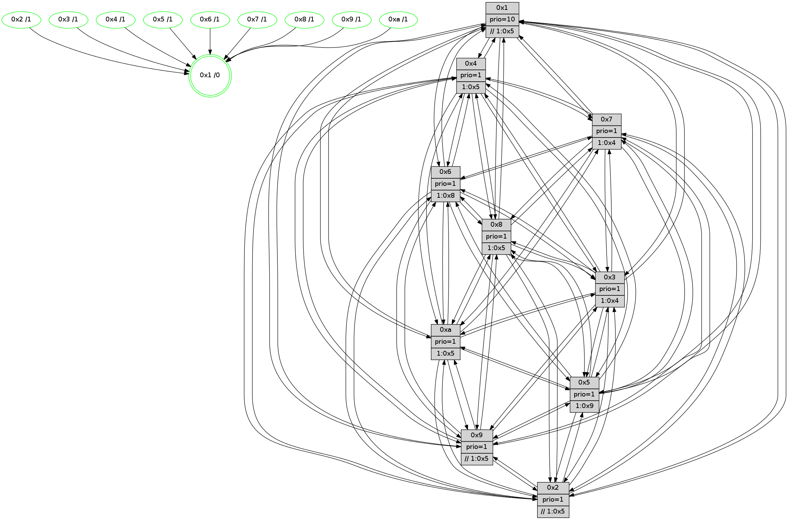

>> << IDX [start] -100 -25 -5 +0 +5 +25 +100 [790.135834932]
 Previous packets
----------------------------------------------------------------------
785.407051 beacon01(faad) #0 coord=01,02,03,04,05,06,07,0a,09,08 cycle=688.0ms assoc
-- color-indic=1 64 c2 4c
785.417034 beacon02(faad) #0 coord=01,02,03,04,05,06,07,0a,09,08 cycle=688.0ms assoc 64 51 7d
785.427033 beacon03(faad) #0 coord=01,02,03,04,05,06,07,0a,09,08 cycle=688.0ms assoc 64 2b 30
785.437035 beacon04(faad) #0 coord=01,02,03,04,05,06,07,0a,09,08 cycle=688.0ms assoc 64 5c da
785.447035 beacon05(faad) #0 coord=01,02,03,04,05,06,07,0a,09,08 cycle=688.0ms assoc 64 26 97
785.457035 beacon06(faad) #0 coord=01,02,03,04,05,06,07,0a,09,08 cycle=688.0ms assoc 64 a8 40
785.467035 beacon07(faad) #0 coord=01,02,03,04,05,06,07,0a,09,08 cycle=688.0ms assoc 64 d2 0d
785.477039 beacon0a(faad) #0 coord=01,02,03,04,05,06,07,0a,09,08 cycle=688.0ms assoc 64 a3 06
785.487043 beacon09(faad) #0 coord=01,02,03,04,05,06,07,0a,09,08 cycle=688.0ms assoc 64 2d d1
785.497039 beacon08(faad) #0 coord=01,02,03,04,05,06,07,0a,09,08 cycle=688.0ms assoc 64 57 9c
785.508942 [Hello(1): seq=412 sym=4,2,9,5,10,3,8,6,7 sysInfo=coloring-mode-on,ColoringModeRequestCalled stat=4:12,4,15,0/2:9,12,6,9/9:11,2,12,1/5:9,10,15,2/10:4,15,3,8/3:6,3,3,0/8:0,14,6,7/6:9,9,5,7/7:14,2,11,10]
785.511592 [Hello(6): seq=503 sym=2,3,5,4,7,9,8,10,1 sysInfo= stat=2:13,12,4,7/3:0,13,12,7/5:9,7,14,10/4:7,6,10,0/7:0,6,11,2/9:2,3,0,0/8:6,11,12,6/10:10,3,2,7/1:1,12,0,1]
785.514794 [STC(1) #0.84 tree-change,inconsistent-stability,stable,to-color d=0]
785.520869 [Color(5) seq=156 @0:0 prio=1 >1.@9,1.@a]
785.524412 [Color(7) seq=122 @0:0 prio=1 >1.@4,1.@5,1.@6,1.@8]
785.526100 [Hello(2): seq=499 sym=4,5,7,6,3,9,8,10,1 sysInfo=hasWarning stat=4:13,3,9,4/5:0,11,7,2/7:8,11,1,6/6:2,14,14,6/3:1,11,7,4/9:6,10,7,0/8:5,6,7,5/10:13,12,8,6/1:1,5,0,1]
785.529554 [Color(2) seq=148 @0:0 prio=1 >>1.@5,1.@6,1.@7]
785.531197 [Hello(3): seq=503 sym=1,7,6,2,4,8,9,10,5 sysInfo= stat=1:10,14,8,0/7:5,6,11,4/6:4,4,6,8/2:7,7,10,8/4:15,0,7,5/8:0,5,9,3/9:6,15,14,7/10:7,9,12,7/5:0,6,9,8]
----------------------------------------------------------------------
786.195181 beacon01(faad) #0 coord=01,02,03,04,05,06,07,0a,09,08 cycle=688.0ms assoc
-- color-indic=1 64 7e 49
786.205164 beacon02(faad) #0 coord=01,02,03,04,05,06,07,0a,09,08 cycle=688.0ms assoc 64 ed 78
786.215163 beacon03(faad) #0 coord=01,02,03,04,05,06,07,0a,09,08 cycle=688.0ms assoc 64 97 35
786.225165 beacon04(faad) #0 coord=01,02,03,04,05,06,07,0a,09,08 cycle=688.0ms assoc 64 e0 df
786.235163 beacon05(faad) #0 coord=01,02,03,04,05,06,07,0a,09,08 cycle=688.0ms assoc 64 9a 92
786.245165 beacon06(faad) #0 coord=01,02,03,04,05,06,07,0a,09,08 cycle=688.0ms assoc 64 14 45
786.255164 beacon07(faad) #0 coord=01,02,03,04,05,06,07,0a,09,08 cycle=688.0ms assoc 64 6e 08
786.265170 beacon0a(faad) #0 coord=01,02,03,04,05,06,07,0a,09,08 cycle=688.0ms assoc 64 1f 03
786.275170 beacon09(faad) #0 coord=01,02,03,04,05,06,07,0a,09,08 cycle=688.0ms assoc 64 91 d4
786.285170 beacon08(faad) #0 coord=01,02,03,04,05,06,07,0a,09,08 cycle=688.0ms assoc 64 eb 99
786.296404 [Hello(4): seq=503 sym=5,7,6,2,3,9,8,10,1 sysInfo= stat=5:4,0,11,8/7:0,8,14,3/6:0,3,13,8/2:3,0,8,8/3:2,8,7,5/9:1,6,11,3/8:5,10,12,8/10:12,8,15,7/1:8,13,5,1]
786.298879 [Hello(7): seq=503 sym=2,3,5,6,4,8,9,10,1 sysInfo=hasWarning stat=2:8,11,2,10/3:8,2,0,9/5:6,12,2,13/6:1,14,0,3/4:2,0,0,0/8:2,9,0,5/9:1,5,15,9/10:8,7,1,8/1:0,14,5,0]
786.301612 [Hello(9): seq=447 sym=2,5,3,4,7,6,8,10,1 sysInfo=hasWarning stat=2:4,14,5,0/5:6,10,7,1/3:6,8,7,9/4:6,5,9,5/7:8,7,1,6/6:10,14,11,6/8:14,4,2,0/10:7,15,2,0/1:7,11,6,1]
786.304438 [STC(9)->1 #0.84 tree-change,inconsistent-stability,stable,to-color d=1]
786.306089 [Color(9) seq=152 @0:0 prio=1 >>1.@5,1.@6,1.@7]
786.307814 [Hello(10): seq=436 sym=6,2,3,8,9,5,7,4,1 sysInfo=hasWarning stat=6:4,7,14,3/2:12,6,6,2/3:4,0,5,6/8:7,9,9,7/9:1,2,0,0/5:0,9,12,10/7:12,6,13,4/4:1,9,5,6/1:12,0,6,1]
786.310644 [Color(1) seq=184 @0:0 prio=10 >>1.@5,1.@6,1.@7]
786.312887 [STC(10)->1 #0.84 tree-change,inconsistent-stability,stable,to-color d=1]
786.314833 [Color(10) seq=135 @0:0 prio=1 >1.@5,1.@8,1.@9]
786.316396 [Hello(8): seq=447 sym=5,2,3,4,7,6,9,10,1 sysInfo=hasWarning stat=5:12,11,0,9/2:4,4,6,2/3:9,0,12,9/4:9,6,13,6/7:7,2,15,8/6:11,7,10,8/9:9,4,13,6/10:3,5,1,0/1:1,14,3,0]
786.322980 [Color(3) seq=144 @0:0 prio=1 >1.@4,1.@5,1.@6,1.@7]
786.326739 [Color(8) seq=170 @0:0 prio=1 >1.@5,1.@9,1.@a]
786.336140 [Color(6) seq=157 @0:0 prio=1 >1.@8,1.@9,1.@a]
----------------------------------------------------------------------
786.983311 beacon01(faad) #0 coord=01,02,03,04,05,06,07,0a,09,08 cycle=688.0ms assoc
-- color-indic=1 64 aa 7c
786.993294 beacon02(faad) #0 coord=01,02,03,04,05,06,07,0a,09,08 cycle=688.0ms assoc 64 39 4d
787.003295 beacon03(faad) #0 coord=01,02,03,04,05,06,07,0a,09,08 cycle=688.0ms assoc 64 43 00
787.013295 beacon04(faad) #0 coord=01,02,03,04,05,06,07,0a,09,08 cycle=688.0ms assoc 64 34 ea
787.023296 beacon05(faad) #0 coord=01,02,03,04,05,06,07,0a,09,08 cycle=688.0ms assoc 64 4e a7
787.033294 beacon06(faad) #0 coord=01,02,03,04,05,06,07,0a,09,08 cycle=688.0ms assoc 64 c0 70
787.043296 beacon07(faad) #0 coord=01,02,03,04,05,06,07,0a,09,08 cycle=688.0ms assoc 64 ba 3d
787.053298 beacon0a(faad) #0 coord=01,02,03,04,05,06,07,0a,09,08 cycle=688.0ms assoc 64 cb 36
787.073301 beacon08(faad) #0 coord=01,02,03,04,05,06,07,0a,09,08 cycle=688.0ms assoc 64 3f ac
787.084567 [Hello(1): seq=413 sym=4,2,9,5,10,3,8,6,7 sysInfo=coloring-mode-on,ColoringModeRequestCalled stat=4:13,4,15,0/2:10,13,6,9/9:11,2,12,1/5:10,11,15,2/10:4,0,4,8/3:7,4,3,0/8:1,15,6,7/6:9,10,5,7/7:15,3,11,10]
787.087204 [Hello(3): seq=504 sym=1,7,6,2,4,8,9,10,5 sysInfo= stat=1:10,14,8,0/7:6,6,11,4/6:4,5,6,8/2:7,7,10,8/4:0,0,7,5/8:0,6,9,3/9:6,15,14,7/10:7,9,12,7/5:0,6,9,8]
787.089757 [Hello(6): seq=504 sym=2,3,5,4,7,9,8,10,1 sysInfo= stat=2:14,13,4,7/3:1,13,12,7/5:10,8,14,10/4:8,6,10,0/7:1,7,11,2/9:2,3,0,0/8:6,11,12,6/10:10,3,2,7/1:1,12,1,1]
787.093263 [Hello(5): seq=504 sym=7,6,4,3,1,9,8,10,2 sysInfo=hasWarning stat=7:11,15,1,6/6:7,13,0,7/4:5,8,4,5/3:7,7,6,7/1:2,10,5,1/9:14,11,10,0/8:2,3,7,5/10:6,10,6,1/2:0,1,0,0]
787.096595 [Hello(2): seq=500 sym=4,5,7,6,3,9,8,10,1 sysInfo=hasWarning stat=4:14,3,9,4/5:0,11,7,2/7:9,11,1,6/6:3,15,15,6/3:2,12,7,4/9:7,11,8,0/8:6,7,7,5/10:14,13,9,6/1:2,6,0,1]
787.100430 [Color(4) seq=133 @0:0 prio=1 >1.@5,1.@8,1.@9,1.@a]
787.102434 [Color(2) seq=149 @0:0 prio=1 >>1.@5,1.@6,1.@7]
787.104281 [Color(7) seq=123 @0:0 prio=1 >1.@4,1.@5,1.@6,1.@8]
787.109136 [Color(5) seq=157 @0:0 prio=1 >1.@9,1.@a]
----------------------------------------------------------------------
787.771442 beacon01(faad) #0 coord=01,02,03,04,05,06,07,0a,09,08 cycle=688.0ms assoc
-- color-indic=1 64 16 79
787.781423 beacon02(faad) #0 coord=01,02,03,04,05,06,07,0a,09,08 cycle=688.0ms assoc 64 85 48
787.791424 beacon03(faad) #0 coord=01,02,03,04,05,06,07,0a,09,08 cycle=688.0ms assoc 64 ff 05
787.801424 beacon04(faad) #0 coord=01,02,03,04,05,06,07,0a,09,08 cycle=688.0ms assoc 64 88 ef
787.811424 beacon05(faad) #0 coord=01,02,03,04,05,06,07,0a,09,08 cycle=688.0ms assoc 64 f2 a2
787.821424 beacon06(faad) #0 coord=01,02,03,04,05,06,07,0a,09,08 cycle=688.0ms assoc 64 7c 75
787.831424 beacon07(faad) #0 coord=01,02,03,04,05,06,07,0a,09,08 cycle=688.0ms assoc 64 06 38
787.841429 beacon0a(faad) #0 coord=01,02,03,04,05,06,07,0a,09,08 cycle=688.0ms assoc 64 77 33
787.851430 beacon09(faad) #0 coord=01,02,03,04,05,06,07,0a,09,08 cycle=688.0ms assoc 64 f9 e4
787.861430 beacon08(faad) #0 coord=01,02,03,04,05,06,07,0a,09,08 cycle=688.0ms assoc 64 83 a9
787.872638 [Hello(7): seq=504 sym=2,3,5,6,4,8,9,10,1 sysInfo=hasWarning stat=2:8,11,2,10/3:9,3,0,9/5:6,13,2,13/6:1,15,1,3/4:2,0,0,0/8:3,10,0,5/9:2,6,0,9/10:9,8,2,8/1:1,15,5,0]
787.875661 [Hello(4): seq=504 sym=5,7,6,2,3,9,8,10,1 sysInfo= stat=5:4,1,11,8/7:1,9,14,3/6:0,4,14,8/2:3,1,8,8/3:3,9,7,5/9:2,7,12,3/8:6,11,12,8/10:13,9,0,7/1:9,14,5,1]
787.879428 [Hello(8): seq=448 sym=5,2,3,4,7,6,9,10,1 sysInfo=hasWarning stat=5:13,12,0,9/2:5,5,6,2/3:10,0,12,9/4:10,7,13,6/7:8,3,15,8/6:12,8,10,8/9:9,4,13,6/10:3,5,1,0/1:2,14,3,0]
787.881987 [Color(3) seq=145 @0:0 prio=1 >1.@4,1.@5,1.@6,1.@7]
787.883639 [Hello(9): seq=448 sym=2,5,3,4,7,6,8,10,1 sysInfo=hasWarning stat=2:5,15,5,0/5:7,11,7,1/3:7,9,7,9/4:7,6,9,5/7:9,8,1,6/6:11,15,11,6/8:15,5,3,0/10:8,0,3,0/1:8,12,6,1]
787.886368 [Hello(10): seq=437 sym=6,2,3,8,9,5,7,4,1 sysInfo=hasWarning stat=6:5,8,15,3/2:13,7,6,2/3:5,1,5,6/8:8,10,9,7/9:1,2,0,0/5:1,10,12,10/7:13,7,13,4/4:2,10,5,6/1:13,0,6,1]
787.889394 [Color(6) seq=158 @0:0 prio=1 >1.@8,1.@9,1.@a]
787.891118 [Color(10) seq=136 @0:0 prio=1 >1.@5,1.@8,1.@9]
787.895698 [Color(9) seq=153 @0:0 prio=1 >>1.@5,1.@6,1.@7]
787.905842 [Color(8) seq=171 @0:0 prio=1 >1.@5,1.@9,1.@a]
----------------------------------------------------------------------
788.559572 beacon01(faad) #0 coord=01,02,03,04,05,06,07,0a,09,08 cycle=688.0ms assoc
-- color-indic=1 64 d2 77
788.569555 beacon02(faad) #0 coord=01,02,03,04,05,06,07,0a,09,08 cycle=688.0ms assoc 64 41 46
788.579554 beacon03(faad) #0 coord=01,02,03,04,05,06,07,0a,09,08 cycle=688.0ms assoc 64 3b 0b
788.589554 beacon04(faad) #0 coord=01,02,03,04,05,06,07,0a,09,08 cycle=688.0ms assoc 64 4c e1
788.599554 beacon05(faad) #0 coord=01,02,03,04,05,06,07,0a,09,08 cycle=688.0ms assoc 64 36 ac
788.609556 beacon06(faad) #0 coord=01,02,03,04,05,06,07,0a,09,08 cycle=688.0ms assoc 64 b8 7b
788.619556 beacon07(faad) #0 coord=01,02,03,04,05,06,07,0a,09,08 cycle=688.0ms assoc 64 c2 36
788.629560 beacon0a(faad) #0 coord=01,02,03,04,05,06,07,0a,09,08 cycle=688.0ms assoc 64 b3 3d
788.649561 beacon08(faad) #0 coord=01,02,03,04,05,06,07,0a,09,08 cycle=688.0ms assoc 64 47 a7
788.660781 [Hello(3): seq=505 sym=1,7,6,2,4,8,9,10,5 sysInfo= stat=1:10,14,8,0/7:7,7,11,4/6:5,6,6,8/2:8,8,10,8/4:0,1,7,5/8:0,7,9,3/9:7,0,14,7/10:8,10,12,7/5:1,7,9,8]
788.665003 [Color(4) seq=134 @0:0 prio=1 >1.@5,1.@8,1.@9,1.@a]
788.667025 [Hello(1): seq=414 sym=4,2,9,5,10,3,8,6,7 sysInfo=coloring-mode-on,ColoringModeRequestCalled stat=4:13,5,15,0/2:11,14,6,9/9:12,3,12,1/5:11,12,15,2/10:5,1,4,8/3:8,5,3,0/8:2,0,6,7/6:10,11,5,7/7:0,4,11,10]
788.669484 [Color(7) seq=124 @0:0 prio=1 >1.@4,1.@5,1.@6,1.@8]
788.675742 [Color(2) seq=150 @0:0 prio=1 >>1.@5,1.@6,1.@7]
788.678605 [Hello(5): seq=505 sym=7,6,4,3,1,9,8,10,2 sysInfo=hasWarning stat=7:12,15,1,6/6:7,14,0,7/4:6,8,4,5/3:8,8,6,7/1:3,10,5,1/9:15,12,10,0/8:3,4,7,5/10:7,11,6,1/2:0,1,0,0]
788.681448 [Color(5) seq=158 @0:0 prio=1 >1.@9,1.@a]
----------------------------------------------------------------------
789.347705 beacon01(faad) #0 coord=01,02,03,04,05,06,07,0a,09,08 cycle=688.0ms assoc
-- color-indic=1 64 6e 72
789.357686 beacon02(faad) #0 coord=01,02,03,04,05,06,07,0a,09,08 cycle=688.0ms assoc 64 fd 43
789.367687 beacon03(faad) #0 coord=01,02,03,04,05,06,07,0a,09,08 cycle=688.0ms assoc 64 87 0e
789.377688 beacon04(faad) #0 coord=01,02,03,04,05,06,07,0a,09,08 cycle=688.0ms assoc 64 f0 e4
789.387688 beacon05(faad) #0 coord=01,02,03,04,05,06,07,0a,09,08 cycle=688.0ms assoc 64 8a a9
789.397688 beacon06(faad) #0 coord=01,02,03,04,05,06,07,0a,09,08 cycle=688.0ms assoc 64 04 7e
789.407689 beacon07(faad) #0 coord=01,02,03,04,05,06,07,0a,09,08 cycle=688.0ms assoc 64 7e 33
789.417692 beacon0a(faad) #0 coord=01,02,03,04,05,06,07,0a,09,08 cycle=688.0ms assoc 64 0f 38
789.427692 beacon09(faad) #0 coord=01,02,03,04,05,06,07,0a,09,08 cycle=688.0ms assoc 64 81 ef
789.437693 beacon08(faad) #0 coord=01,02,03,04,05,06,07,0a,09,08 cycle=688.0ms assoc 64 fb a2
789.450832 [Hello(7): seq=505 sym=2,3,5,6,4,8,9,10,1 sysInfo=hasWarning stat=2:8,12,2,10/3:10,4,0,9/5:7,14,2,13/6:2,0,1,3/4:2,0,0,0/8:4,11,0,5/9:3,7,0,9/10:10,9,2,8/1:1,15,5,0]
789.453558 [Color(3) seq=146 @0:0 prio=1 >1.@4,1.@5,1.@6,1.@7]
789.456884 [Color(6) seq=159 @0:0 prio=1 >1.@8,1.@9,1.@a]
789.458491 PARSE ERROR************************
Traceback (most recent call last):
File "PacketAnalysis.py", line 167, in showOperaPacket
structPacket = OperaPacketParse.parsePacket(rawPacket)
File "../../pkg-python/HipSens/Core/OperaPacketParse.py", line 461, in parsePacket
return parseHelloMessage(data)
File "../../pkg-python/HipSens/Core/OperaPacketParse.py", line 125, in parseHelloMessage
struct.unpack("!H",linkList[:2])[0])
error: unpack requires a string argument of length 2
48 34 0a 00 01 b6 00 02 02 12 06 00 02 00 03 00 08 00 09 00 05 00 07 00 04 00 01 00 53 04 00 02 00 00 4c 12 3f 86 26 8d 65 16 79 b8 00 31 ac b2 4d 8e 65 b2 16 0e 4d 15
789.462282 [Color(10) seq=137 @0:0 prio=1 >1.@5,1.@8,1.@9]
789.465025 [STC(1) #0.85 tree-change,inconsistent-stability,stable,to-color d=0]
789.467596 [Color(1) seq=186 @0:0 prio=10 >>1.@5,1.@6,1.@7]
789.475326 [Color(8) seq=172 @0:0 prio=1 >1.@5,1.@9,1.@a]